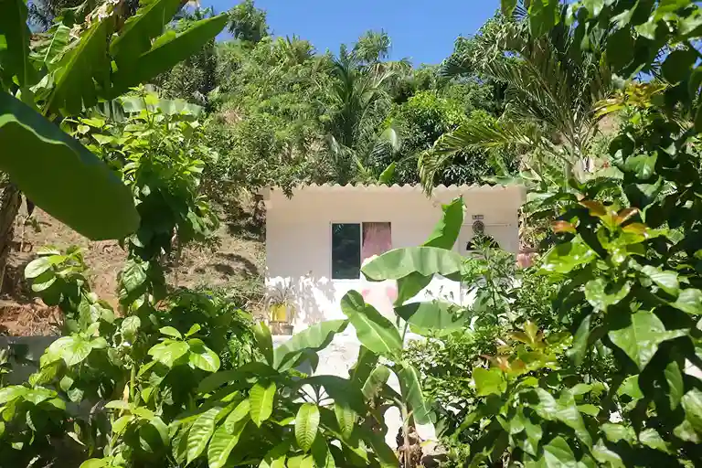
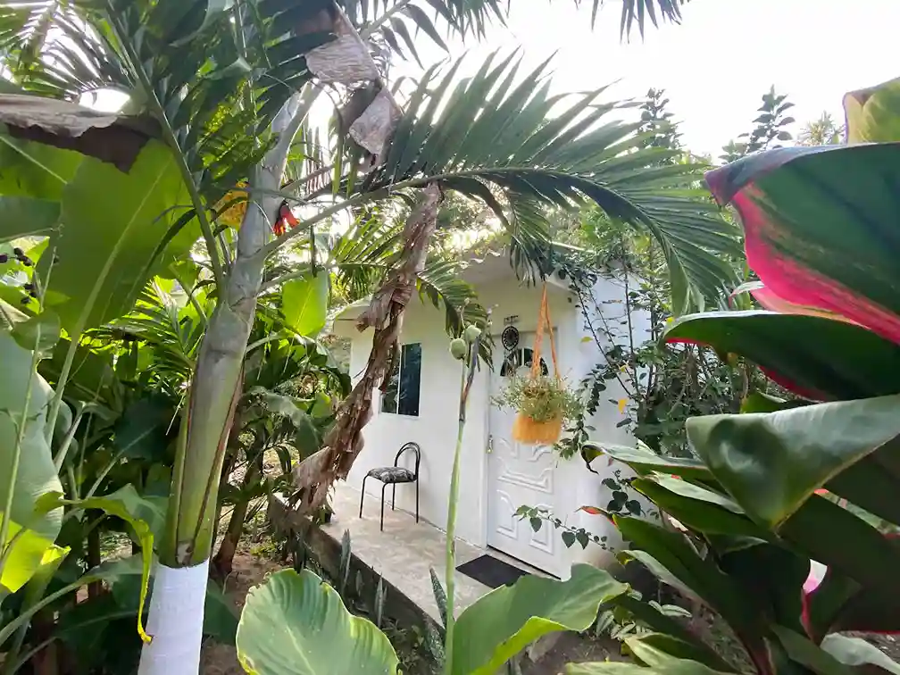
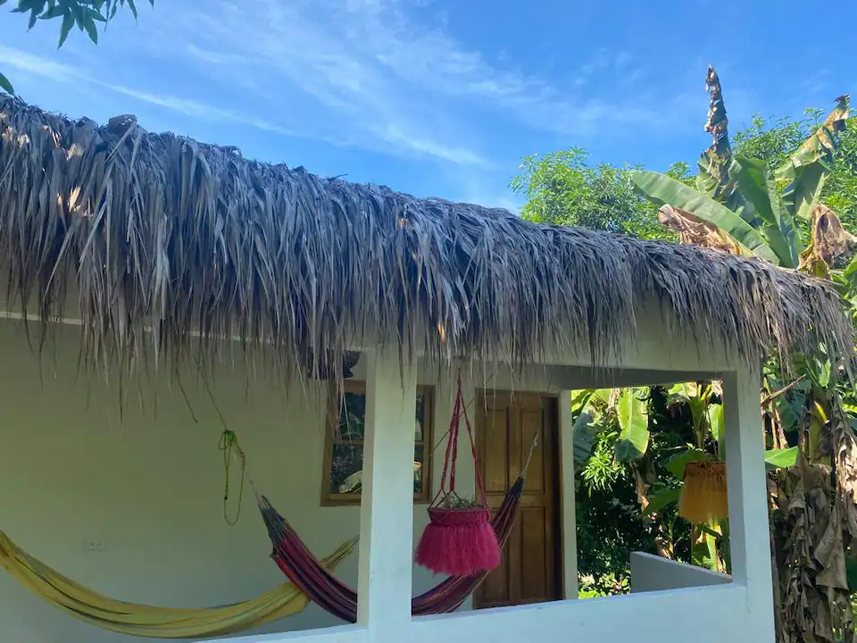
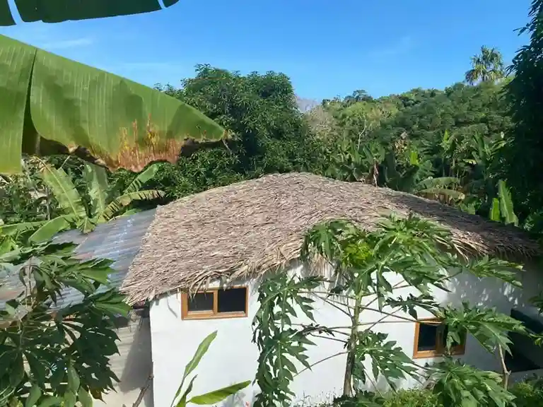
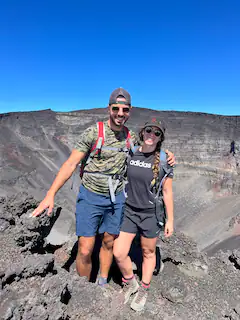

ARTE
Despierta tu creatividad en un paraíso tropical: Aprenderemos a estampar flores y hojas recolectadas sobre tela de algodón, descubriendo al mismo tiempo la diversidad de la flora local, sus beneficios y usos medicinales; también aprenderemos las bases del tejido en crochet, mientras te conectas con la esencia de la naturaleza. ¡Reserva tu lugar y transforma los colores y texturas del Edén en recuerdos imborrables!
SIEMBRA
Descubre el arte de cultivar vida en un entorno paradisíaco. En nuestra finca tropical, participa en talleres de germinado y siembra, y disfruta de un tour guiado de permacultura. Recorre nuestros jardines orgánicos, aprende prácticas sostenibles y conecta con la Tierra en un espacio donde los ciclos naturales cobran vida. ¡Reserva tu lugar y llévate conocimientos prácticos y un vínculo renovado con la naturaleza!
para descansar en medio de la naturaleza




Descansa en un paraíso natural y despierta rodeado de la serenidad del bosque tropical: el sonido de las olas, aves, monos aulladores y la brisa entre las hojas. En Finca Natural Mystic, nuestros alojamientos combinan confort y conexión con la naturaleza, ofreciendo paz en cada detalle. Disfruta de vistas asombrosas y una experiencia de descanso única. ¡Reserva y vive la tranquilidad en el corazón de la Sierra Nevada de Santa Marta!
VER MÁS FOTOS RESERVAR AHORA
Audrey
AirbnbGran estancia en casa de Marion y su familia. Bien ubicado, entre las hermosas playas y el parque Tayrona. Los platos ofrecidos y preparados por Marion, servidos en casa, son deliciosos y económicos.. no se pueden perder durante una estadía. Gracias de nuevo.
Juan Camilo
AirbnbMaravillosa estancia con una hermosa familia. Me recibieron como uno de los suyos, me proporcionaron café de fruta, me llevaron a caminar y cenaron en Navidad conmigo. Una pequeña comunidad maravillosa y un placer estar cerca. Gracias por recibirme. ¡Hasta la próxima!
Matteo
AirbnbSer anfitrión de los chicos fue una experiencia más que positiva. Amigable y siempre sonriente, un lugar rodeado de naturaleza, departamento limpio y a poca distancia de fabulosas playas y del magnífico Parque Tayrona. ¡Muy recomendable, definitivamente volvería!
Síguenos en Instagram
@fincanaturalmystic
(C) copyright 2025 FINCA NATURAL MYSTIC. RNT 168119. Diseñado por ADC MAKER